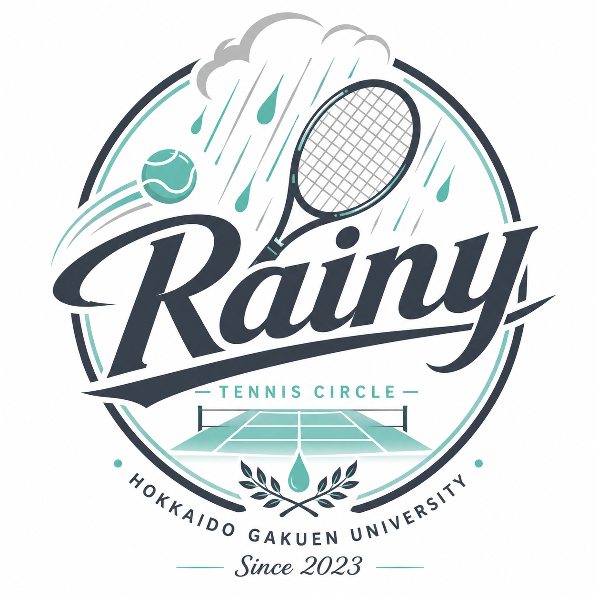

テニスが中心にあること
大学生活を充実させるためには、楽しいイベントが必要不可欠です。 普段の飲み会や季節ごとのイベントなどの「非日常」を共にすることで、 かけがえのない深い絆を築くことができます。 しかし、その根底にはテニスがあることが大切だと考えています。 紳士にテニスと向き合うことがより深い絆や自分の成長につながるはずです。

Rainy Tennis CircleHokkaido Gakuen University
他のテニサーとは何かが違う…
北海学園大学のテニスサークルです！楽しさと真面目さのバランスを大切に活動しています！経験者が中心のサークルですが、 テニスが好きなら誰でも大歓迎です！テニスを通じて、年齢や学部を越えたつながりを広げていきましょう！
About
Rainyは経験者中心の毎週の練習と初参加でも気軽に参加できるイベントを両立したサークルです！ テニス以外にもBBQやボウリング、忘年会などのイベントを毎月行っています！
何よりRainyは2023年設立の新しいサークルです。他のサークルと比較して規模は小さく 部員数もそこまで多くはありませんが、その分部員同士の距離が近く、和気あいあいと活動しています！ また、段々と部員数やイベントの回数が増えることで、サークル自体の成長を肌で感じることができるのも 当サークルの魅力の1つとなっています。
Philosophy
大学生活を充実させるためには、楽しいイベントが必要不可欠です。 普段の飲み会や季節ごとのイベントなどの「非日常」を共にすることで、 かけがえのない深い絆を築くことができます。 しかし、その根底にはテニスがあることが大切だと考えています。 紳士にテニスと向き合うことがより深い絆や自分の成長につながるはずです。
「活私奉公（かっしほうこう）」は個人の強みや能力を活かしながら、 組織や社会に貢献するという考え方です。サークルの運営には誰かがほかの人のために 負担を強いられる場面が少なからずあります。当サークルでは 特定の人に負担が集中しないよう、全員が率先してサークルの運営に携わって欲しいと考えています。
Join Us
写真や最新のお知らせはInstagramから確認できます。 参加希望や質問はInstagramのDMから気軽にお問い合わせください！ 部員一同皆様のご参加を心よりお待ちしております！